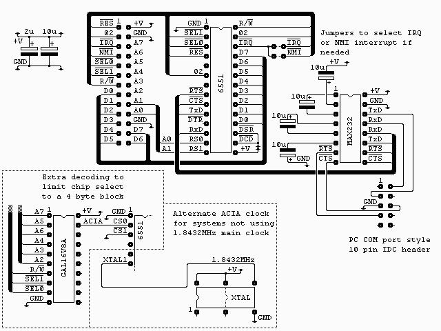
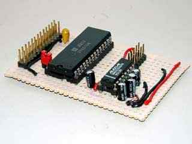
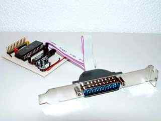

|
|
6551 RS232 port. By Lee Davison. |
|

The connector on the top left of the diagram is from my own 6502 boards (see sbc project) and is as it is for two reasons. It's easy to wire on a stripboard layout and I have a lot of 26 way ribbon, headers and plugs. All the signals are directly from the 6502 except /SEL0 and /SEL1 which are used to select the block $F0xx with /SEL0 = 0 and /SEL1 = 1.The 10 pin IDC plug is to allow use of a standard PC type COM port plug. This was done because it's easier to wire on stripboard and allows the choice of a 9 or 25 pin connector.
The two capacitors are low ESR electrolytics and are placed near the 6551 and near the MAX232. If you don't have this type to hand you can use standard electrolytics with some low value ceramic capacitor, say 0.1uF, in parallel.
The 6551 occupies the 256 byte block $F0xx and, as the 6502 this was made for is clocked at 1.832MHz, is clocked by the phase 2 clock. If a different processor clock is being used then the 6551 can be clocked by a 1.832MHz oscillator as shown in the alternate clock diagram. Two jumpers are used to select which interrupt the 6551 is tied to. If interrupts are not required then both jumpers can be left open.
The MAX232 performs level translation between the TTL levels of the 6551 and the bipolar RS232 levels. Only the signals for a 5 wire interface are implemented with DCD and DSR being tied low on the 6551 to allow continuous operation.
The GAL16V8A is optional and is used purely to generate the chip select. This was not fitted to the original because it was not necessary to fully decode this part. For anyone interested the equations for this chip are in acia_01.pld and can be compiled with WinCUPL. The fuse file, acia_01.jed is also included.
 
Software.
To use the 6551 as a polled device the software is fairly simple. First the 6551 must be reset and the baud rate, character length and parity must be set.To send a character all we need do is wait for the Tx buffer to empty then write the byte.
| Last page update: 29th August, 2003. | e-mail me
 |